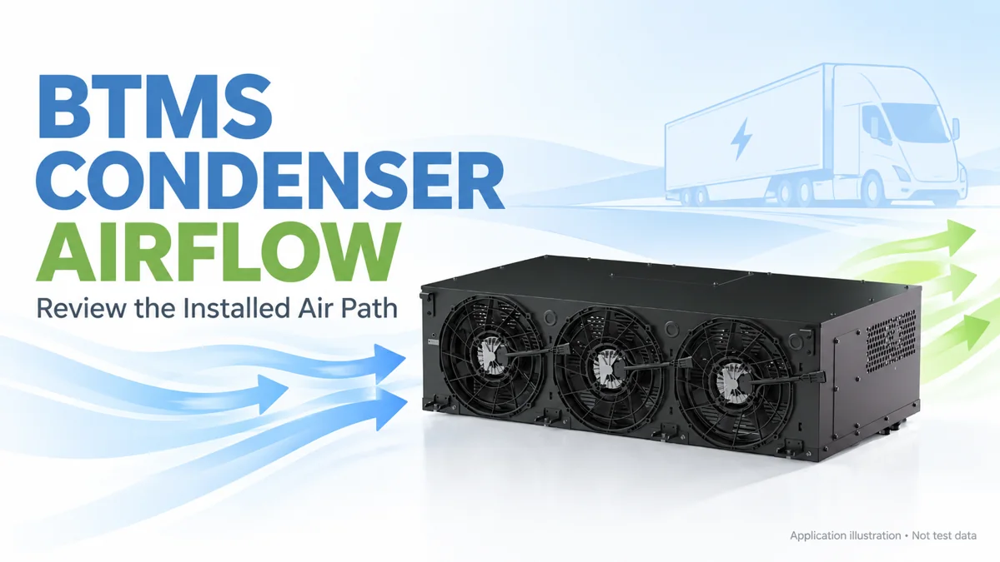
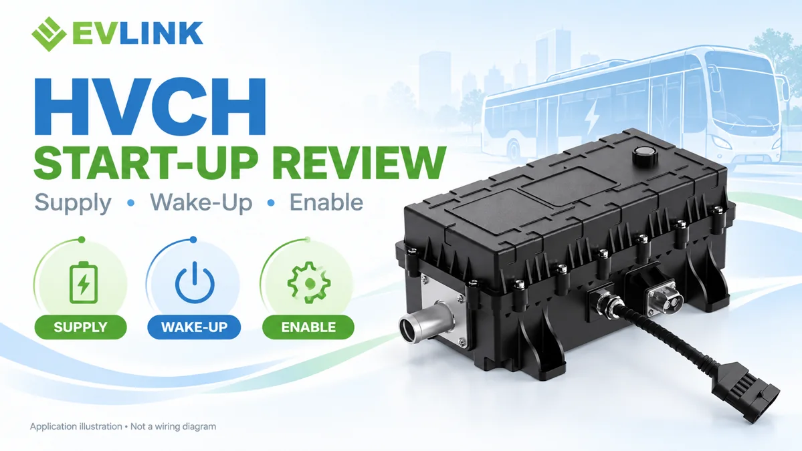

DAILY-BTMS-1022 · Codex
BTMS Condenser Airflow: An Installation Review Checklist

If a battery thermal management system cools acceptably on a bench but struggles after installation, check the condenser air path before ordering a larger unit. A fan can be running while the condenser is drawing restricted or already-heated air. This review is for an air-cooled condenser in a refrigerant-based BTMS; it does not apply unchanged to a liquid-cooled condenser.
Define the air the unit actually receives
Record both surrounding ambient temperature and air temperature at the condenser inlet. They are not automatically the same measurement. An inlet beside another heat source, inside a restricted enclosure or close to its own discharge needs attention before catalogue capacity can be compared with vehicle performance.
Ask for the installation drawing, intended airflow direction, service clearances and operating conditions used for the supplier's capacity data. Do not borrow a clearance or airspeed value from a different model. A controller's local cooling-air requirement is also not automatically the condenser's required airflow.
Inspect the complete path, not just the fan
Trace where air enters the vehicle enclosure, how it crosses the condenser and where it leaves. Include grilles, guards, ducts and body panels. Photograph the installed arrangement with the panels in their normal operating positions. An open workshop panel can conceal a restriction that returns when the vehicle is reassembled.
Look for a route that lets discharge air return to the inlet. Check nearby surfaces and the effect of other cooling fans. Danfoss identifies restricted flow, incorrect direction and air recirculation among the possible contributors to high condensing pressure. Those are general refrigeration checks, not a diagnosis of any particular EVLINK installation.
Separate a command from a physical response
A fan command in a log proves that a command was issued. It does not prove the required airflow reached the coil. Compare the requested state with the available feedback, observed direction and the actual air path. Follow the equipment manual when interpreting speed or fault signals.
Any work near rotating fans, electrical equipment or the refrigerant circuit belongs to trained personnel under the vehicle's approved safety procedures. Do not bypass pressure protection, remove guards during operation or open the refrigerant circuit simply to complete an airflow checklist.
Build a useful evidence record
Before changing the installation, agree which measurements will answer the question. A useful record keeps the following information together:
- BTMS model, configuration, software version and installation drawing revision.
- Vehicle state: stationary or moving, operating load and other thermal systems running.
- Ambient and condenser-inlet temperatures, with measurement positions identified.
- Fan request, available feedback and observed airflow direction.
- Coolant inlet/outlet temperatures and flow, where approved measurements are available.
- Relevant controller limits, alarms and the time each event occurred.
- Photos showing grilles, ducting, service panels and nearby heat sources.
Synchronise the records so a change in a command can be compared with the measured response. Missing channels should be marked unavailable. A single photograph or temperature difference cannot establish airflow volume or cooling capacity by itself.
Compare changes under controlled conditions
Change one installation variable at a time where practical, and document what changed. Keep the starting state and load comparable. If the weather or battery load changes between runs, record that difference rather than attributing the entire result to the duct modification.
Agree the acceptance criteria with the responsible engineer before testing. This article gives no universal passing temperature, pressure, airspeed or percentage improvement. Supplier requirements and vehicle limits determine the decision.
Know when the airflow check is not enough
An airflow concern is one possible explanation, not the final answer. If the documented air path meets its requirements and the issue remains, the investigation may need to examine sensors, refrigerant-side operation, controls or the load assumption. Use the equipment's diagnostic procedure rather than repeatedly increasing fan demand.
Our battery thermal management system range is a starting point for a model-specific discussion. For the distinction between the liquid and refrigeration sides, see BTMS refrigerant circuit versus coolant loop.
Send the installation evidence with the enquiry
When you contact EVLINK about a BTMS installation, include the unit model, vehicle duty, drawing, inlet conditions and available logs. If those data are not yet available, say so. The next step is to agree the review scope, not to invent missing measurements or promise a capacity increase.
DAILY-HVCH-1022 · Codex
HVCH Not Starting? Check Low-Voltage Supply and Wake-Up

If a high-voltage coolant heater does not start, high-voltage availability is only one part of the investigation. The selected unit may also depend on a separate control supply, a wake-up input, valid messages and other enable conditions. Begin with the exact heater documentation rather than assuming every HVCH starts in the same way.
Identify the variant before reading the fault
Record the part number, hardware revision, software version and interface-document revision. Confirm which supply powers the electronics and how the unit is expected to leave its sleep state. A CAN-controlled heater and a thermostat-controlled heater do not offer the same commands or diagnostic information.
Some manufacturers publish separate high-voltage and low-voltage ratings. That establishes why both interfaces need review; it does not make another supplier's supply range valid for an EVLINK unit. Use the approved drawing and limits for your selected variant.
Distinguish three questions
First, was the specified control supply available at the relevant time? Second, did the heater reach the documented awake or ready state? Third, were the conditions for heating satisfied? A “no heat” report does not say which of these failed.
A vehicle-controller log showing an enable request is useful, but it is not proof that the heater received or accepted it. Compare the request with the unit's documented feedback where that interface provides feedback. If it does not, agree an alternative observation with the supplier instead of inventing a ready-state signal.
Capture the supply during the event
A supply reading taken after the event may not explain an intermittent start problem. Ask the responsible electrical engineer to define the approved measurement point and capture method for the control supply and return during wake-up. Include relevant events from other vehicle loads if they occur at the same time.
This is not permission for unqualified live testing. High-voltage isolation, access and measurement must follow the vehicle manufacturer's procedures and local requirements. Do not bridge an interlock, force a power stage on or use an assumed pinout to see whether the heater runs.
Check the wake-up definition, not a familiar pattern
Use the interface specification to establish whether wake-up depends on an input, a network event, an ignition state or another defined condition. Record the required sequence and timing from that document. Do not import a delay, baud rate or message identifier from a similar-looking heater.
If the selected model uses communication commands, check the relevant protocol fields and version. If it uses thermostat or switched control, follow that architecture instead. A missing CAN response is not a useful fault finding on a unit that has no CAN interface.
Review inhibits before replacing the heater
A unit may be awake without being permitted to heat. Its documentation determines which conditions can inhibit operation and how they are reported. Supply limits, temperature limits, interlocks and other protections should be reviewed only where they actually apply to the variant.
Preserve the reported fault state before clearing anything. Repeated resets can remove useful event information and are not a substitute for diagnosing the cause. The responsible engineer should decide the next test from the available evidence and approved service instructions.
Prepare one time-aligned evidence package
- Exact heater identity and the document versions used for interpretation.
- Requested operation and the vehicle state immediately before the failed start.
- Approved control-supply observation, with measurement location and instrument stated.
- Wake-up or enable input as defined for that model, not an assumed generic signal.
- Available heater states, diagnostics and relevant vehicle-controller events.
- Changes between successful and unsuccessful attempts, including software or harness work.
Keep successful and failed attempts under comparable conditions where possible. If an event was not captured, mark it missing. A hypothesis such as a supply interruption remains provisional until the recorded evidence supports it.
What counts as a resolved issue?
Agree acceptance criteria before the corrective test. Confirm the documented wake-up and shutdown behaviour and the required heating response under the approved conditions. Save the final configuration with the logs so the result can be repeated. One successful restart after an unexplained fault is not the same as a verified repair.
For broader command mapping, use the separate HVCH CAN integration checklist; for product selection, review the high-voltage coolant heater range. Neither replaces the interface documentation for the actual part.
Ask for a model-specific review
Send EVLINK the heater identity, interface revision and available event record. State which observations are confirmed and which are still assumptions. That gives the supplier a defined question to review without disguising a wiring, control or operating-condition issue as a proven product failure.